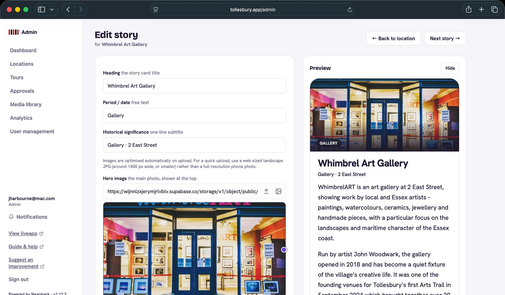
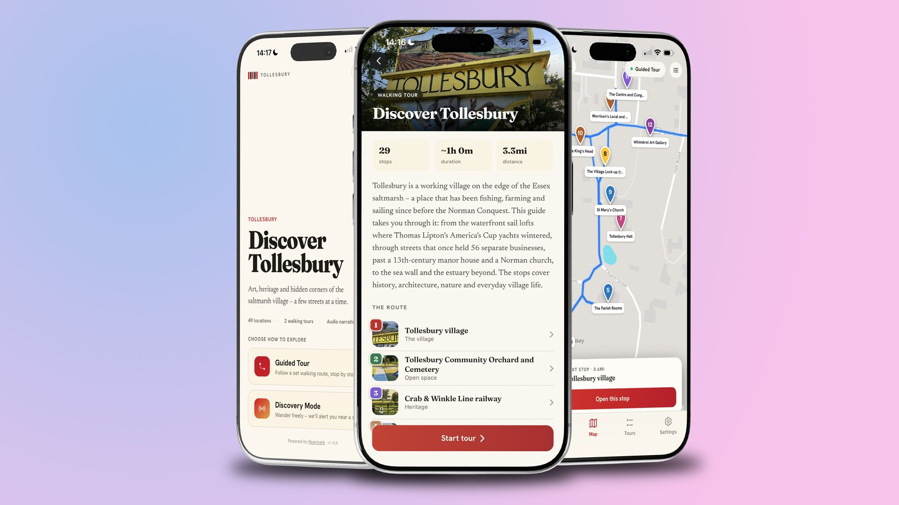
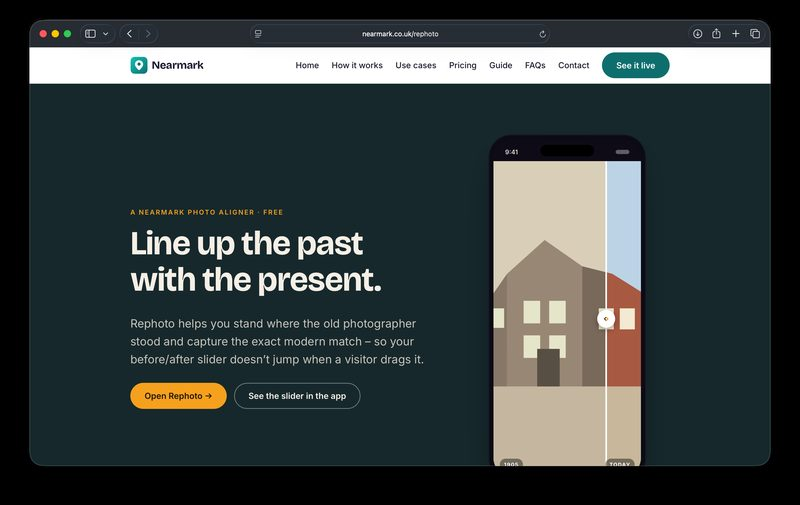

Open-source · GPS · Heritage · iOS · Android · White-label
Nearmark
An open-source platform that gives any walkable place its own location-aware app. Built for the communities that maintain local heritage without institutional budgets.
- Vue 3
- PWA
- TypeScript
- Supabase
- Leaflet
- OpenStreetMap
- PostHog
- Cloudflare
- Vite
- Vercel
- Buffer

Nearmark is an open-source platform that gives any walkable place its own location-aware app: a heritage trail, an arts walk, a pub crawl, open gardens. It runs on Vue 3, Supabase and Leaflet/OpenStreetMap. Data is EU-hosted. There is no API key billing: the platform is genuinely free to self-host, or available as a managed deployment for communities that want someone else to run the infrastructure.
The design principle is that “open-source” should mean accessible, not just theoretically available. Most open-source mapping tools require technical setup that excludes the communities most likely to benefit from them. Nearmark is designed to remove that barrier.
01
Front End · Mobile
The visitor-facing app, optimised for mobile. It delivers GPS-triggered heritage content as a visitor moves through a place: points of interest, historical photographs, before/after comparisons via Rephoto, and curated walking routes. Runs in the browser as a PWA, so no App Store friction for first use.
Two live use cases:

Tollesbury Arts Trail
A community heritage and arts mapping app for Tollesbury, Essex. Built end to end: product vision, UX, development and launch across App Store and Google Play.
LGBT Heritage App
A GPS-based LGBTQ+ heritage walking tour platform, developed as part of the LGBT History Project ecosystem. Open-source and white-label: available for communities, cultural institutions, and local authorities that want to map and share their own queer heritage.
02
Back Office · Desktop
The desktop interface for heritage organisations and community editors. Content managers use the back office to create and manage trails, add and edit points of interest, upload and caption historical images, and publish changes to the live app without touching code. Designed for the volunteer coordinator who knows their community’s history but is not a developer.

03
Commercial Site
The product and marketing site for Nearmark. It explains what the platform does, who it is for, and how to get started, whether self-hosting or through a managed deployment. Includes documentation for community organisations and local authorities considering adopting it.
04
Nearmark App
The packaged white-label build, open-source and available to download from GitHub. A community or organisation can deploy Nearmark under their own name and branding. The same codebase powers every instance: infrastructure is shared, identity is not.

Rephoto
A free tool for standing where the old photographer stood. Rephoto aligns a historical photograph with the live camera view so that a before/after comparison slider lines up exactly when a visitor drags it, without the jump that happens when images aren’t properly matched. Most heritage apps show a side-by-side of old and new photographs without any alignment work. Rephoto is the infrastructure that makes a properly-aligned comparison possible.
